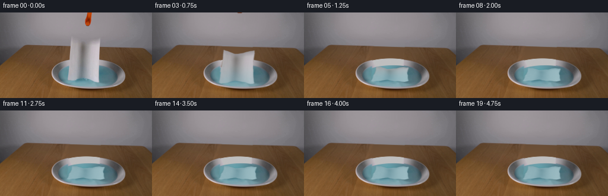
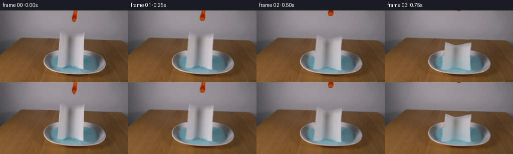
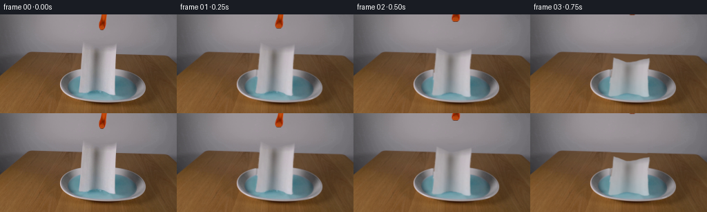

CODING AGENTS AS PIXEL WORLD MODELS
traex/GPT-6.1-Sol · 0128
点击播放 · 原生 RGB 像素
逐轮保存的候选
回放视频、检查图与代码变化。
每份候选均可单独播放。实际图片检查记录在下方工具轨迹中。
候选 01播放与检查图
点击播放 · 原生 RGB 像素


展开代码变化
--- 上一保存版本
+++ 本次保存版本
@@ -0,0 +1,238 @@
+from pathlib import Path
+import numpy as np
+from PIL import Image, ImageDraw
+from scipy.ndimage import gaussian_filter
+import cv2
+import artifact_io
+
+ROOT=Path(__file__).resolve().parent
+W,H=256,144
+original=np.array(Image.open(ROOT/'first_frame.png').convert('RGB'),dtype=np.uint8)
+Y,X=np.mgrid[:H,:W].astype(np.float32)
+rng=np.random.default_rng(782)
+
+def polygon(points, scale=4):
+ a=Image.new('L',(W*scale,H*scale),0)
+ ImageDraw.Draw(a).polygon([(int(x*scale),int(y*scale)) for x,y in points],fill=255)
+ return np.asarray(a.resize((W,H),Image.Resampling.LANCZOS),dtype=np.float32)/255
+
+def ss(a):
+ a=np.clip(a,0,1)
+ return a*a*(3-2*a)
+
+# The three isolated foreground boundaries, measured from source RGB.
+paper_outline=[(120,39.5),(122.5,41),(130,44.5),(138,47.5),(143,48),
+ (150,46.8),(160,44.5),(168.7,41.5),(169.1,48),(168.5,56),
+ (168.1,64),(167,70),(166.9,78),(167,88),(166.4,102),(166.5,111),
+ (167.4,116.2),(165.4,117.6),(161.4,117.1),(157.5,116),
+ (154.6,113.7),(150,112.2),(145,110.3),(139,110.4),(133,111.6),
+ (129,113.4),(124,114.8),(117,115),(113.8,112.3),(114.2,107),
+ (115.3,101),(115.7,89),(116,82),(116.9,74),(118,63),
+ (118.6,55),(119.1,47)]
+mask=polygon(paper_outline)
+# Preserve the continuous table edge and the metal/liquid contours when exposing
+# the region formerly hidden by the falling sheet. Fit only visible RGB samples.
+f=original.astype(np.float32)
+x=(X-145)/60; y=(Y-63)/30
+features=np.stack([np.ones_like(x),x,y,x*x,x*y,y*y],-1)
+side=((X>=85)&(X<=114))|((X>=174)&(X<=207))
+gray_samples=side&(Y>=35)&(Y<=54)
+wood_samples=side&(Y>=60)&(Y<=78)
+coef_gray=np.linalg.lstsq(features[gray_samples],f[gray_samples],rcond=None)[0]
+coef_wood=np.linalg.lstsq(features[wood_samples],f[wood_samples],rcond=None)[0]
+gray=features@coef_gray
+wood=features@coef_wood
+edge=52.3+.032*X
+onwood=ss((Y-edge+.35)/1.3)
+est=gray*(1-onwood[...,None])+wood*onwood[...,None]
+
+# The back of the shallow metal dish has a broad, softly reflective rim.
+# Parameterize its visible silver strips by their depth between two ellipses.
+x_outer=(X-145.1)/62.7
+back=103-26.4*np.sqrt(np.maximum(0,1-x_outer*x_outer))
+x_water=(X-149.5)/52.6
+water_back=106.2-18.1*np.sqrt(np.maximum(0,1-x_water*x_water))
+d=(Y-back)/np.maximum(4,water_back-back)
+nx=(X-145)/50
+rf=np.stack([np.ones_like(d),nx,nx*nx,d,d*d,d*d*d,nx*d],-1)
+rim_samples=side&(X>99)&(X<191)&(Y>=79)&(Y<96)&(d>0.08)&(d<1.03)&((f[:,:,0]-f[:,:,1])<13)&((f[:,:,2]-f[:,:,0])<8)&(f[:,:,0]>99)
+rc=np.linalg.lstsq(rf[rim_samples],f[rim_samples],rcond=None)[0]
+rim=np.clip(rf@rc,80,190)
+# Gentle spatial grain comes from this frame, not newly acquired imagery.
+noise=rng.normal(0,.48,(H,W,1)).astype(np.float32)
+rim+=noise
+metal=ss((Y-back+.25)/1.0)
+est=est*(1-metal[...,None])+rim*metal[...,None]
+
+# Fit the liquid color field using its unoccluded left, right and front strips.
+lx=(X-148)/50; ly=(Y-106)/20
+lf=np.stack([np.ones_like(lx),lx,ly,lx*lx,lx*ly,ly*ly,lx**3,lx*lx*ly,lx*ly*ly,ly**3],-1)
+blue_samples=(f[:,:,2]>f[:,:,0]+15)&(f[:,:,1]>f[:,:,0]+12)&(X>100)&(X<196)&(Y>90)&(Y<124)&((X<113)|(X>171)|(Y>118))
+lc=np.linalg.lstsq(lf[blue_samples],f[blue_samples],rcond=None)[0]
+liquid=np.clip(lf@lc,45,190)+noise
+water=ss((Y-water_back+.3)/1.3)
+est=est*(1-water[...,None])+liquid*water[...,None]
+
+# No fixed pixel outside the measured silhouettes needs to be replaced.
+# Small dilation includes camera antialiasing at the boundary.
+repair=cv2.dilate(mask,np.ones((3,3),np.uint8))
+repair=gaussian_filter(repair,.45)
+repair=np.clip(repair,0,1)
+plate=f*(1-repair[...,None])+est*repair[...,None]
+
+# Color-key the orange/black tool, including its slightly blurred edge.
+tool_region=(Y<25)&(X>140)&(X<158)
+tool_raw=((f[:,:,0]-f[:,:,1])>24)&tool_region
+tool_mask=cv2.dilate(tool_raw.astype(np.float32),np.ones((3,3),np.uint8))
+tool_mask=gaussian_filter(tool_mask,.38)
+# Interpolate the neutral backdrop horizontally to erase only the tool.
+tool_bg=np.zeros_like(f)
+for yy in range(26):
+ left=f[yy,139]; right=f[yy,159]
+ tt=np.clip((np.arange(W)-139)/20,0,1)
+ tool_bg[yy]=left[None,:]*(1-tt[:,None])+right[None,:]*tt[:,None]
+plate=plate*(1-tool_mask[...,None])+tool_bg*tool_mask[...,None]
+
+# Unpremultiply boundary RGB for the soft sheet silhouette, avoiding a brown
+# table fringe when the textured paper moves to a different background.
+alpha=mask
+texture=f.copy()
+bound=(alpha>.08)&(alpha<.95)
+texture[bound]=(f[bound]-est[bound]*(1-alpha[bound,None]))/np.maximum(.25,alpha[bound,None])
+texture=np.clip(texture,65,224)
+# Extend texture values into the transparent exterior for bilinear sampling.
+core=alpha>.50
+_, inds=__import__('scipy').ndimage.distance_transform_edt(~core,return_indices=True)
+texture[~core]=texture[inds[0][~core],inds[1][~core]]
+
+# Floating cloth is a triangulated, textured, flexible sheet; at release its
+# coordinates are unchanged, then gravity brings the lower hem into the water.
+# Rotation, foreshortening and little asymmetric bends replace a rigid slide.
+GX=np.linspace(112,171,13,dtype=np.float32)
+GY=np.linspace(39,119,19,dtype=np.float32)
+ux,uy=np.meshgrid(GX,GY)
+verts=np.stack([ux,uy],-1)
+triangles=[]
+for j in range(len(GY)-1):
+ for i in range(len(GX)-1):
+ a=(j,i);b=(j,i+1);c=(j+1,i);e=(j+1,i+1)
+ triangles.extend([[a,b,c],[b,e,c]])
+
+S=3
+# Textured layers are sampled in source pixel coordinates but composited at 3x.
+tex_hi=cv2.resize(texture,(W*S,H*S),interpolation=cv2.INTER_LINEAR)
+alpha_hi=cv2.resize(alpha,(W*S,H*S),interpolation=cv2.INTER_LINEAR)
+plate_hi=cv2.resize(plate,(W*S,H*S),interpolation=cv2.INTER_CUBIC)
+
+
+def surface(t):
+ p=ss(t/1.4)
+ scale=.285+.715*np.cos(p*np.pi/2)
+ bottom=116.9+4.1*np.sin(np.pi*p)-1.0*p
+ width=1+.14*p
+ sway=1.9*np.sin(6.5*t)*np.exp(-1.3*t)*(1-p)
+ cu=(ux-141.5)/27
+ v=(117-uy)/77
+ dx=(ux-141.5)*width+141.5+4.2*p+sway*v
+ dx+=3.0*np.sin(5.4*t+2.4*v)*np.sin(np.pi*v)*p*(1-p)
+ dx+=1.4*p*np.sin(4.1*v+1.7*cu)
+ dy=bottom+(uy-117)*scale
+ dy+=p*(.9*np.sin(4.5*cu+1.8*v)+.55*np.sin(11*cu+4*v))
+ dy+=2.2*np.sin(2*np.pi*v+1.2*cu+4*t)*p*(1-p)
+ settle=np.exp(-max(0,t-1.35)*2.0)
+ if t>1.35:
+ dy+=.7*np.sin((t-1.35)*7.0)*settle
+ dx+=.6*np.sin((t-1.35)*5.4)*settle
+ # A few millimetres of slow buoyant movement, settling in the same dish.
+ dx+=.16*p*np.sin(1.8*t)
+ dy+=.11*p*np.sin(2.5*t)
+ return np.stack([dx,dy],-1),p
+
+
+def raster_sheet(t):
+ dst,p=surface(t)
+ # Water absorption propagates upward through the fibers after contact.
+ wet=np.clip((t-.14)*1.00+(Y-115)/90,0,1)
+ wet=ss(wet)
+ # Strong vertical light/shadow folds relax when the sheet lies flat.
+ lum=f.mean(2)
+ relaxed=np.empty_like(f)
+ contrast=1-.57*p
+ relaxed[:]=170+(texture-170)*contrast
+ watery=np.stack([132+(lum-168)*.36,176+(lum-168)*.28,186+(lum-168)*.24],-1)
+ fiber=gaussian_filter(rng.normal(0,1,(H,W)),.36).astype(np.float32)
+ watery+=fiber[...,None]*.7
+ col=relaxed*(1-(wet*.80)[...,None])+watery*(wet*.80)[...,None]
+ tex=cv2.resize(np.clip(col,0,255),(W*S,H*S),interpolation=cv2.INTER_LINEAR)
+ premul=tex*alpha_hi[...,None]
+ # Back and front faces remain joined; one shared mesh prevents cracks.
+ layer=np.zeros((H*S,W*S,3),np.float32)
+ am=np.zeros((H*S,W*S),np.float32)
+ for triangle in triangles:
+ src=np.array([verts[z] for z in triangle],np.float32)*S
+ dest=np.array([dst[z] for z in triangle],np.float32)*S
+ bx,by,bw,bh=cv2.boundingRect(dest)
+ if bx>=W*S or by>=H*S or bx+bw<=0 or by+bh<=0:continue
+ bx0=max(0,bx);by0=max(0,by);bx1=min(W*S,bx+bw);by1=min(H*S,by+bh)
+ if bx1<=bx0 or by1<=by0:continue
+ local=dest-np.array([bx0,by0],np.float32)
+ M=cv2.getAffineTransform(src,local)
+ size=(bx1-bx0,by1-by0)
+ rgb=cv2.warpAffine(premul,M,size,flags=cv2.INTER_LINEAR,borderMode=cv2.BORDER_CONSTANT)
+ aa=cv2.warpAffine(alpha_hi,M,size,flags=cv2.INTER_LINEAR,borderMode=cv2.BORDER_CONSTANT)
+ tm=np.zeros((size[1],size[0]),np.uint8)
+ cv2.fillConvexPoly(tm,np.round(local*16).astype(np.int32),255,shift=4)
+ select=tm>0
+ layer[by0:by1,bx0:bx1][select]=rgb[select]
+ am[by0:by1,bx0:bx1][select]=aa[select]
+ return layer,am,p
+
+
+def make_frame(t):
+ frame=plate.copy()
+ # A small contact disturbance produces low-amplitude elliptical capillary
+ # ripples. They dissipate rather than continuing as an artificial animation.
+ age=t-.18
+ if age>0:
+ rr=np.sqrt(((X-144)/1.0)**2+((Y-109)/.34)**2)
+ surface_inside=((X-149)/52)**2+((Y-106.6)/18)**2<.97
+ envelope=np.exp(-((rr-(9+22*age))/9)**2)*np.exp(-age*1.5)
+ wave=(np.sin((rr-22*age)*1.5)+.3*np.sin((rr-16*age)*2.4))*envelope
+ ripmask=surface_inside.astype(np.float32)*ss((Y-water_back)/2)
+ frame+=wave[...,None]*np.array([2.5,3.6,4.0])*ripmask[...,None]
+ sheet,aa,p=raster_sheet(t)
+ out=cv2.resize(frame,(W*S,H*S),interpolation=cv2.INTER_CUBIC)
+ # A very soft contact shadow underneath floating paper; never on the table.
+ shadow=cv2.GaussianBlur(aa,(0,0),1.6*S)*(.065*p)
+ out*=1-shadow[...,None]
+ out=out*(1-aa[...,None])+sheet
+ out=cv2.resize(out,(W,H),interpolation=cv2.INTER_AREA)
+ # Open the small tips, then withdraw the released grabber straight upward.
+ # Use its own RGB texture, with a slight lower-jaw parting deformation.
+ rise=24*ss(np.clip((t-.1)/.8,0,1))
+ sx=X-.3*np.sin(t*3)*np.exp(-t*3)
+ sy=Y+rise
+ part=1.4*ss(t/.35)*ss((sy-10)/9)
+ sx-=np.where(X<148,-part,part)
+ tm=cv2.remap(tool_mask,sx.astype(np.float32),sy.astype(np.float32),cv2.INTER_LINEAR,borderMode=cv2.BORDER_CONSTANT)
+ tc=cv2.remap(f*tool_mask[...,None],sx.astype(np.float32),sy.astype(np.float32),cv2.INTER_LINEAR,borderMode=cv2.BORDER_CONSTANT)
+ out=out*(1-tm[...,None])+tc
+ return np.clip(np.round(out),0,255).astype(np.uint8)
+
+
+def main():
+ frames=[original.copy()]
+ for i in range(1,20):
+ frames.append(make_frame(i/4))
+ frames=np.stack(frames)
+ assert np.array_equal(frames[0],original)
+ artifact_io.save(frames,ROOT)
+ tmp=ROOT/'.tmp';tmp.mkdir(exist_ok=True)
+ Image.fromarray(np.uint8(np.clip(plate,0,255))).save(tmp/'reconstructed_plate.png')
+ Image.fromarray(np.uint8(alpha*255)).save(tmp/'sheet_alpha.png')
+ # Source and dynamics diagnostics are numeric; no image-viewing tools.
+ print('Saved',frames.shape,frames.dtype)
+ print('Per-transition absolute RGB changes:',np.round(np.abs(np.diff(frames.astype(float),axis=0)).mean((1,2,3)),3))
+ print('Rim-fit RGB range central:',np.round(rim[80:88,125:164].min((0,1))),np.round(rim[80:88,125:164].max((0,1))))
+
+if __name__=='__main__':main()
候选 02播放与检查图
点击播放 · 原生 RGB 像素

展开代码变化
--- 上一保存版本
+++ 本次保存版本
@@ -10,6 +10,7 @@
original=np.array(Image.open(ROOT/'first_frame.png').convert('RGB'),dtype=np.uint8)
Y,X=np.mgrid[:H,:W].astype(np.float32)
rng=np.random.default_rng(782)
+fiber_field=gaussian_filter(rng.normal(0,1,(H,W)),.36).astype(np.float32)
def polygon(points, scale=4):
a=Image.new('L',(W*scale,H*scale),0)
@@ -58,6 +59,21 @@
rim_samples=side&(X>99)&(X<191)&(Y>=79)&(Y<96)&(d>0.08)&(d<1.03)&((f[:,:,0]-f[:,:,1])<13)&((f[:,:,2]-f[:,:,0])<8)&(f[:,:,0]>99)
rc=np.linalg.lstsq(rf[rim_samples],f[rim_samples],rcond=None)[0]
rim=np.clip(rf@rc,80,190)
+# The missing center of the metal lip is between two visible glossy strips.
+# Continue those strips at equal ellipse-depth instead of extrapolating a
+# poorly conditioned polynomial far outside its measured x coordinates.
+for yy in range(75,94):
+ for xx in range(111,172):
+ depth=float(d[yy,xx])
+ if not -.2<depth<1.3: continue
+ vals=[]
+ for samplex in (106,109,112,175,178,181):
+ sourcey=float(back[yy,samplex]+depth*(water_back[yy,samplex]-back[yy,samplex]))
+ y0=int(np.clip(np.floor(sourcey),0,H-2));mix=sourcey-y0
+ vals.append(f[y0,samplex]*(1-mix)+f[y0+1,samplex]*mix)
+ left=np.mean(vals[:3],axis=0);right=np.mean(vals[3:],axis=0)
+ q=(xx-110)/68
+ rim[yy,xx]=left*(1-q)+right*q
# Gentle spatial grain comes from this frame, not newly acquired imagery.
noise=rng.normal(0,.48,(H,W,1)).astype(np.float32)
rim+=noise
@@ -159,10 +175,12 @@
relaxed=np.empty_like(f)
contrast=1-.57*p
relaxed[:]=170+(texture-170)*contrast
- watery=np.stack([132+(lum-168)*.36,176+(lum-168)*.28,186+(lum-168)*.24],-1)
- fiber=gaussian_filter(rng.normal(0,1,(H,W)),.36).astype(np.float32)
- watery+=fiber[...,None]*.7
- col=relaxed*(1-(wet*.80)[...,None])+watery*(wet*.80)[...,None]
+ watery=np.stack([146+(lum-168)*.40,180+(lum-168)*.32,187+(lum-168)*.30],-1)
+ watery+=fiber_field[...,None]*.7
+ col=relaxed*(1-(wet*.74)[...,None])+watery*(wet*.74)[...,None]
+ # Fibrous wet paper is opaque enough to remain a distinct pale sheet on
+ # the blue liquid. Its vertical creases retain soft relief on the surface.
+ col+=(p*1.7*np.sin((X-114)*.8)*np.sin((Y-39)*.085))[...,None]
tex=cv2.resize(np.clip(col,0,255),(W*S,H*S),interpolation=cv2.INTER_LINEAR)
premul=tex*alpha_hi[...,None]
# Back and front faces remain joined; one shared mesh prevents cracks.
候选 03播放与检查图
点击播放 · 原生 RGB 像素
展开代码变化
--- 上一保存版本
+++ 本次保存版本
@@ -235,6 +235,14 @@
tm=cv2.remap(tool_mask,sx.astype(np.float32),sy.astype(np.float32),cv2.INTER_LINEAR,borderMode=cv2.BORDER_CONSTANT)
tc=cv2.remap(f*tool_mask[...,None],sx.astype(np.float32),sy.astype(np.float32),cv2.INTER_LINEAR,borderMode=cv2.BORDER_CONSTANT)
out=out*(1-tm[...,None])+tc
+ # Keep all unrelated source pixels truly static. Supersampling may alter
+ # untouched pixel grain by a few RGB levels, so restore it beyond motion.
+ sheet_support=cv2.resize(aa,(W,H),interpolation=cv2.INTER_AREA)
+ moving=(repair>.001)|(tool_mask>.001)|(tm>.001)|(sheet_support>.001)
+ water_domain=((X-149)/53)**2+((Y-107)/19)**2<1.03
+ moving|=water_domain
+ moving=cv2.dilate(moving.astype(np.uint8),np.ones((3,3),np.uint8))>0
+ out[~moving]=f[~moving]
return np.clip(np.round(out),0,255).astype(np.uint8)
候选 04播放与检查图
可观测工具轨迹
实际执行的命令与返回图片。
命令 1exit 0
/bin/bash -lc 'ls -la && cat prompt.txt && cat GENERATION_RULES.md'
命令 2exit 0
/bin/bash -lc "cat artifact_io.py && python - <<'PY'
from PIL import Image
import numpy as np
im=np.array(Image.open('first_frame.png').convert('RGB'))
print('shape',im.shape)
# numerical 8x8 block mean colors
for y in range(0,144,8):
print(y, ' '.join('%02x%02x%02x'%tuple(np.mean(im[y:y+8,x:x+8],axis=(0,1)).astype(int)) for x in range(0,256,8)))
PY"命令 3exit 0
/bin/bash -lc "python - <<'PY'
from PIL import Image
import numpy as np
im=np.array(Image.open('first_frame.png').convert('RGB')).astype(float)
a=im.reshape(72,2,128,2,3).mean((1,3))
for y,row in enumerate(a):
s=''
for r,g,b in row:
if r>1.5*g and r>b*1.5 and r>85: c='O' if r-g>65 else 't'
elif r>g*1.23 and r>b*1.4:c=':'
elif b>r+10 and g>r+3:c='~'
elif max(r,g,b)-min(r,g,b)<18: c=' .,-=+*#%@'[min(9,int((r+g+b)/3)//24)]
else:c='?'
s+=c
print('%3d'% (y*2),s)
PY"命令 4exit 0
/bin/bash -lc "python - <<'PY'
from PIL import Image
import numpy as np
im=np.array(Image.open('first_frame.png'))
# full res grayscale and brighter paper portion
chars=' .:-=+*#%@'
for y in range(0,120):
if y%1==0:
row=im[y,108:180].astype(float)
s=''.join(chars[min(9,int(p.mean()/256*10))] for p in row)
print('%3d '%y+s)
print('RGB at y16-48, x136-158')
for y in range(16,49,2):
print(y,[(x,tuple(im[y,x])) for x in range(136,160,2)])
PY"命令 5exit 0
/bin/bash -lc "python - <<'PY'
import numpy as np
from PIL import Image
im=np.array(Image.open('first_frame.png'))
# rows RGB of central setup sampled spaced
for y in [42,44,46,48,50,52,54,56,58,60,64,70,78,80,86,90,94,100,108,112,114,116,118,120,124,126]:
print('\\ny=',y)
print(' '.join('%d:%d,%d,%d'%(x,*im[y,x]) for x in range(108,181,3)))
PY"命令 6exit 0
/bin/bash -lc "python - <<'PY'
import importlib.util
for m in ['cv2','scipy','numpy','PIL']:
print(m, bool(importlib.util.find_spec(m)))
PY
python - <<'PY'
import numpy as np
from PIL import Image
im=np.array(Image.open('first_frame.png'))
for y in range(39,119):
x0=110; x1=174
# luma relative background gray for shape edge. print positions luma
vals=im[y,x0:x1].mean(1)
if y in range(39,58) or y in range(108,119):
print(y,' '.join('%3d'%v for v in vals))
PY"命令 7exit 0
/bin/bash -lc "python - <<'PY'
from PIL import Image
import numpy as np
im=np.array(Image.open('first_frame.png'))
for y in range(76,101):
print(y,[(x,tuple(im[y,x])) for x in [98,103,108,111,114,170,175,180,184,188,192]])
PY"命令 8exit 0
/bin/bash -lc "python - <<'PY'
import numpy as np
from PIL import Image
im=np.array(Image.open('first_frame.png')).astype(float)
for y in range(39,59):
# approximated backdrop
bg=np.linspace(im[y,112],im[y,176],65).mean(1)
dif=im[y,112:177].mean(1)-bg
print(y,''.join('+' if v>5 else '-' if v< -5 else '.' for v in dif))
PY"命令 9exit 0
/bin/bash -lc "python - <<'PY'
import numpy as np
from PIL import Image
im=np.array(Image.open('first_frame.png')).astype(float)
for y in range(76,129):
m=(im[y,:,2]>im[y,:,0]+9)&(im[y,:,1]>im[y,:,0]+5)
xs=np.flatnonzero(m)
if len(xs):
chunks=np.split(xs,np.flatnonzero(np.diff(xs)>1)+1)
print(y,[(int(g[0]),int(g[-1])) for g in chunks])
PY"命令 10exit 0
/bin/bash -lc "mkdir -p .tmp && cat > .tmp/examine.py <<'PY'
# Only numerical source diagnostics.
import numpy as np
from PIL import Image
im=np.asarray(Image.open('first_frame.png'))
print('tool row extents')
for y in range(25):
x=np.flatnonzero((im[y,:,0].astype(float)-im[y,:,1]>28)&(np.arange(256)>135)&(np.arange(256)<162))
print(y, (x.min(),x.max()) if len(x) else '-')
PY
python .tmp/examine.py"命令 11exit 0
/bin/bash -lc "python - <<'PY'
import numpy as np
from PIL import Image
im=np.array(Image.open('first_frame.png')).astype(float)
y,x=np.mgrid[:144,:256]
m=(im[:,:,2]>im[:,:,0]+15)&(im[:,:,1]>im[:,:,0]+12)&(x>100)&(x<196)&(y>90)&(y<124)&((x<113)|(x>170)|(y>118))
xn=(x-148)/50;yn=(y-106)/20
A=np.stack([np.ones_like(xn),xn,yn,xn*xn,xn*yn,yn*yn,xn**3,xn*xn*yn,xn*yn*yn,yn**3],-1)
c=np.linalg.lstsq(A[m],im[m],rcond=None)[0]
p=A@c
for py in [88,90,95,100,105,110,115,120]:
print(py,np.round(p[py,[118,130,140,150,160,170]],1))
print('fit rms',((p[m]-im[m])**2).mean()**.5)
PY"命令 12exit 0
/bin/bash -lc "python - <<'PY'
import numpy as np
from PIL import Image
im=np.array(Image.open('first_frame.png')).astype(float)
for x in [90,94,98,102,106,110,112,114,170,174,178,182,186,190,194,198,202,206,210]:
ys=np.arange(74,109); c=im[ys,x]
q=ys[(c[:,0]-c[:,1]<12)&(c[:,0]>70)]
print(x, q[:5])
print('bowl horizontal extent')
for y in [80,84,90,96,102,108,114,120,124,127]:
row=im[y]
m=(row[:,2]>row[:,0]-10)&(np.arange(256)>75)&(np.arange(256)<220)
xx=np.flatnonzero(m)
print(y,xx.min(),xx.max())
PY"命令 13exit 0
/bin/bash -lc "python - <<'PY'
from PIL import Image
import numpy as np
im=np.array(Image.open('first_frame.png'))
for y in [54,55,56,57,58,59,60,62,70,76,78,79,80,81,82,84,86,88,90]:
print(y, [(x,tuple(im[y,x])) for x in [105,109,113,172,176,179]])
PY"命令 14exit 0
/bin/bash -lc "cat > generate.py <<'PY'
from pathlib import Path
import numpy as np
from PIL import Image, ImageDraw
from scipy.ndimage import gaussian_filter
import cv2
import artifact_io
ROOT=Path(__file__).resolve().parent
W,H=256,144
original=np.array(Image.open(ROOT/'first_frame.png').convert('RGB'),dtype=np.uint8)
Y,X=np.mgrid[:H,:W].astype(np.float32)
rng=np.random.default_rng(782)
def polygon(points, scale=4):
a=Image.new('L',(W*scale,H*scale),0)
ImageDraw.Draw(a).polygon([(int(x*scale),int(y*scale)) for x,y in points],fill=255)
return np.asarray(a.resize((W,H),Image.Resampling.LANCZOS),dtype=np.float32)/255
def ss(a):
a=np.clip(a,0,1)
return a*a*(3-2*a)
# The three isolated foreground boundaries, measured from source RGB.
paper_outline=[(120,39.5),(122.5,41),(130,44.5),(138,47.5),(143,48),
(150,46.8),(160,44.5),(168.7,41.5),(169.1,48),(168.5,56),
(168.1,64),(167,70),(166.9,78),(167,88),(166.4,102),(166.5,111),
(167.4,116.2),(165.4,117.6),(161.4,117.1),(157.5,116),
(154.6,113.7),(150,112.2),(145,110.3),(139,110.4),(133,111.6),
(129,113.4),(124,114.8),(117,115),(113.8,112.3),(114.2,107),
(115.3,101),(115.7,89),(116,82),(116.9,74),(118,63),
(118.6,55),(119.1,47)]
mask=polygon(paper_outline)
# Preserve the continuous table edge and the metal/liquid contours when exposing
# the region formerly hidden by the falling sheet. Fit only visible RGB samples.
f=original.astype(np.float32)
x=(X-145)/60; y=(Y-63)/30
features=np.stack([np.ones_like(x),x,y,x*x,x*y,y*y],-1)
side=((X>=85)&(X<=114))|((X>=174)&(X<=207))
gray_samples=side&(Y>=35)&(Y<=54)
wood_samples=side&(Y>=60)&(Y<=78)
coef_gray=np.linalg.lstsq(features[gray_samples],f[gray_samples],rcond=None)[0]
coef_wood=np.linalg.lstsq(features[wood_samples],f[wood_samples],rcond=None)[0]
gray=features@coef_gray
wood=features@coef_wood
edge=52.3+.032*X
onwood=ss((Y-edge+.35)/1.3)
est=gray*(1-onwood[...,None])+wood*onwood[...,None]
# The back of the shallow metal dish has a broad, softly reflective rim.
# Parameterize its visible silver strips by their depth between two ellipses.
x_outer=(X-145.1)/62.7
back=103-26.4*np.sqrt(np.maximum(0,1-x_outer*x_outer))
x_water=(X-149.5)/52.6
water_back=106.2-18.1*np.sqrt(np.maximum(0,1-x_water*x_water))
d=(Y-back)/np.maximum(4,water_back-back)
nx=(X-145)/50
rf=np.stack([np.ones_like(d),nx,nx*nx,d,d*d,d*d*d,nx*d],-1)
rim_samples=side&(X>99)&(X<191)&(Y>=79)&(Y<96)&(d>0.08)&(d<1.03)&((f[:,:,0]-f[:,:,1])<13)&((f[:,:,2]-f[:,:,0])<8)&(f[:,:,0]>99)
rc=np.linalg.lstsq(rf[rim_samples],f[rim_samples],rcond=None)[0]
rim=np.clip(rf@rc,80,190)
# Gentle spatial grain comes from this frame, not newly acquired imagery.
noise=rng.normal(0,.48,(H,W,1)).astype(np.float32)
rim+=noise
metal=ss((Y-back+.25)/1.0)
est=est*(1-metal[...,None])+rim*metal[...,None]
# Fit the liquid color field using its unoccluded left, right and front strips.
lx=(X-148)/50; ly=(Y-106)/20
lf=np.stack([np.ones_like(lx),lx,ly,lx*lx,lx*ly,ly*ly,lx**3,lx*lx*ly,lx*ly*ly,ly**3],-1)
blue_samples=(f[:,:,2]>f[:,:,0]+15)&(f[:,:,1]>f[:,:,0]+12)&(X>100)&(X<196)&(Y>90)&(Y<124)&((X<113)|(X>171)|(Y>118))
lc=np.linalg.lstsq(lf[blue_samples],f[blue_samples],rcond=None)[0]
liquid=np.clip(lf@lc,45,190)+noise
water=ss((Y-water_back+.3)/1.3)
est=est*(1-water[...,None])+liquid*water[...,None]
# No fixed pixel outside the measured silhouettes needs to be replaced.
# Small dilation includes camera antialiasing at the boundary.
repair=cv2.dilate(mask,np.ones((3,3),np.uint8))
repair=gaussian_filter(repair,.45)
repair=np.clip(repair,0,1)
plate=f*(1-repair[...,None])+est*repair[...,None]
# Color-key the orange/black tool, including its slightly blurred edge.
tool_region=(Y<25)&(X>140)&(X<158)
tool_raw=((f[:,:,0]-f[:,:,1])>24)&tool_region
tool_mask=cv2.dilate(tool_raw.astype(np.float32),np.ones((3,3),np.uint8))
tool_mask=gaussian_filter(tool_mask,.38)
# Interpolate the neutral backdrop horizontally to erase only the tool.
tool_bg=np.zeros_like(f)
for yy in range(26):
left=f[yy,139]; right=f[yy,159]
tt=np.clip((np.arange(W)-139)/20,0,1)
tool_bg[yy]=left[None,:]*(1-tt[:,None])+right[None,:]*tt[:,None]
plate=plate*(1-tool_mask[...,None])+tool_bg*tool_mask[...,None]
# Unpremultiply boundary RGB for the soft sheet silhouette, avoiding a brown
# table fringe when the textured paper moves to a different background.
alpha=mask
texture=f.copy()
bound=(alpha>.08)&(alpha<.95)
texture[bound]=(f[bound]-est[bound]*(1-alpha[bound,None]))/np.maximum(.25,alpha[bound,None])
texture=np.clip(texture,65,224)
# Extend texture values into the transparent exterior for bilinear sampling.
core=alpha>.50
_, inds=__import__('scipy').ndimage.distance_transform_edt(~core,return_indices=True)
texture[~core]=texture[inds[0][~core],inds[1][~core]]
# Floating cloth is a triangulated, textured, flexible sheet; at release its
# coordinates are unchanged, then gravity brings the lower hem into the water.
# Rotation, foreshortening and little asymmetric bends replace a rigid slide.
GX=np.linspace(112,171,13,dtype=np.float32)
GY=np.linspace(39,119,19,dtype=np.float32)
ux,uy=np.meshgrid(GX,GY)
verts=np.stack([ux,uy],-1)
triangles=[]
for j in range(len(GY)-1):
for i in range(len(GX)-1):
a=(j,i);b=(j,i+1);c=(j+1,i);e=(j+1,i+1)
triangles.extend([[a,b,c],[b,e,c]])
S=3
# Textured layers are sampled in source pixel coordinates but composited at 3x.
tex_hi=cv2.resize(texture,(W*S,H*S),interpolation=cv2.INTER_LINEAR)
alpha_hi=cv2.resize(alpha,(W*S,H*S),interpolation=cv2.INTER_LINEAR)
plate_hi=cv2.resize(plate,(W*S,H*S),interpolation=cv2.INTER_CUBIC)
def surface(t):
p=ss(t/1.4)
scale=.285+.715*np.cos(p*np.pi/2)
bottom=116.9+4.1*np.sin(np.pi*p)-1.0*p
width=1+.14*p
sway=1.9*np.sin(6.5*t)*np.exp(-1.3*t)*(1-p)
cu=(ux-141.5)/27
v=(117-uy)/77
dx=(ux-141.5)*width+141.5+4.2*p+sway*v
dx+=3.0*np.sin(5.4*t+2.4*v)*np.sin(np.pi*v)*p*(1-p)
dx+=1.4*p*np.sin(4.1*v+1.7*cu)
dy=bottom+(uy-117)*scale
dy+=p*(.9*np.sin(4.5*cu+1.8*v)+.55*np.sin(11*cu+4*v))
dy+=2.2*np.sin(2*np.pi*v+1.2*cu+4*t)*p*(1-p)
settle=np.exp(-max(0,t-1.35)*2.0)
if t>1.35:
dy+=.7*np.sin((t-1.35)*7.0)*settle
dx+=.6*np.sin((t-1.35)*5.4)*settle
# A few millimetres of slow buoyant movement, settling in the same dish.
dx+=.16*p*np.sin(1.8*t)
dy+=.11*p*np.sin(2.5*t)
return np.stack([dx,dy],-1),p
def raster_sheet(t):
dst,p=surface(t)
# Water absorption propagates upward through the fibers after contact.
wet=np.clip((t-.14)*1.00+(Y-115)/90,0,1)
wet=ss(wet)
# Strong vertical light/shadow folds relax when the sheet lies flat.
lum=f.mean(2)
relaxed=np.empty_like(f)
contrast=1-.57*p
relaxed[:]=170+(texture-170)*contrast
watery=np.stack([132+(lum-168)*.36,176+(lum-168)*.28,186+(lum-168)*.24],-1)
fiber=gaussian_filter(rng.normal(0,1,(H,W)),.36).astype(np.float32)
watery+=fiber[...,None]*.7
col=relaxed*(1-(wet*.80)[...,None])+watery*(wet*.80)[...,None]
tex=cv2.resize(np.clip(col,0,255),(W*S,H*S),interpolation=cv2.INTER_LINEAR)
premul=tex*alpha_hi[...,None]
# Back and front faces remain joined; one shared mesh prevents cracks.
layer=np.zeros((H*S,W*S,3),np.float32)
am=np.zeros((H*S,W*S),np.float32)
for triangle in triangles:
src=np.array([verts[z] for z in triangle],np.float32)*S
dest=np.array([dst[z] for z in triangle],np.float32)*S
bx,by,bw,bh=cv2.boundingRect(dest)
if bx>=W*S or by>=H*S or bx+bw<=0 or by+bh<=0:continue
bx0=max(0,bx);by0=max(0,by);bx1=min(W*S,bx+bw);by1=min(H*S,by+bh)
if bx1<=bx0 or by1<=by0:continue
local=dest-np.array([bx0,by0],np.float32)
M=cv2.getAffineTransform(src,local)
size=(bx1-bx0,by1-by0)
rgb=cv2.warpAffine(premul,M,size,flags=cv2.INTER_LINEAR,borderMode=cv2.BORDER_CONSTANT)
aa=cv2.warpAffine(alpha_hi,M,size,flags=cv2.INTER_LINEAR,borderMode=cv2.BORDER_CONSTANT)
tm=np.zeros((size[1],size[0]),np.uint8)
cv2.fillConvexPoly(tm,np.round(local*16).astype(np.int32),255,shift=4)
select=tm>0
layer[by0:by1,bx0:bx1][select]=rgb[select]
am[by0:by1,bx0:bx1][select]=aa[select]
return layer,am,p
def make_frame(t):
frame=plate.copy()
# A small contact disturbance produces low-amplitude elliptical capillary
# ripples. They dissipate rather than continuing as an artificial animation.
age=t-.18
if age>0:
rr=np.sqrt(((X-144)/1.0)**2+((Y-109)/.34)**2)
surface_inside=((X-149)/52)**2+((Y-106.6)/18)**2<.97
envelope=np.exp(-((rr-(9+22*age))/9)**2)*np.exp(-age*1.5)
wave=(np.sin((rr-22*age)*1.5)+.3*np.sin((rr-16*age)*2.4))*envelope
ripmask=surface_inside.astype(np.float32)*ss((Y-water_back)/2)
frame+=wave[...,None]*np.array([2.5,3.6,4.0])*ripmask[...,None]
sheet,aa,p=raster_sheet(t)
out=cv2.resize(frame,(W*S,H*S),interpolation=cv2.INTER_CUBIC)
# A very soft contact shadow underneath floating paper; never on the table.
shadow=cv2.GaussianBlur(aa,(0,0),1.6*S)*(.065*p)
out*=1-shadow[...,None]
out=out*(1-aa[...,None])+sheet
out=cv2.resize(out,(W,H),interpolation=cv2.INTER_AREA)
# Open the small tips, then withdraw the released grabber straight upward.
# Use its own RGB texture, with a slight lower-jaw parting deformation.
rise=24*ss(np.clip((t-.1)/.8,0,1))
sx=X-.3*np.sin(t*3)*np.exp(-t*3)
sy=Y+rise
part=1.4*ss(t/.35)*ss((sy-10)/9)
sx-=np.where(X<148,-part,part)
tm=cv2.remap(tool_mask,sx.astype(np.float32),sy.astype(np.float32),cv2.INTER_LINEAR,borderMode=cv2.BORDER_CONSTANT)
tc=cv2.remap(f*tool_mask[...,None],sx.astype(np.float32),sy.astype(np.float32),cv2.INTER_LINEAR,borderMode=cv2.BORDER_CONSTANT)
out=out*(1-tm[...,None])+tc
return np.clip(np.round(out),0,255).astype(np.uint8)
def main():
frames=[original.copy()]
for i in range(1,20):
frames.append(make_frame(i/4))
frames=np.stack(frames)
assert np.array_equal(frames[0],original)
artifact_io.save(frames,ROOT)
tmp=ROOT/'.tmp';tmp.mkdir(exist_ok=True)
Image.fromarray(np.uint8(np.clip(plate,0,255))).save(tmp/'reconstructed_plate.png')
Image.fromarray(np.uint8(alpha*255)).save(tmp/'sheet_alpha.png')
# Source and dynamics diagnostics are numeric; no image-viewing tools.
print('Saved',frames.shape,frames.dtype)
print('Per-transition absolute RGB changes:',np.round(np.abs(np.diff(frames.astype(float),axis=0)).mean((1,2,3)),3))
print('Rim-fit RGB range central:',np.round(rim[80:88,125:164].min((0,1))),np.round(rim[80:88,125:164].max((0,1))))
if __name__=='__main__':main()
PY
python generate.py"命令 15exit 0
/bin/bash -lc "python - <<'PY'
import numpy as np
from PIL import Image
for fn in ['.tmp/reconstructed_plate.png','frames/01.png','frames/03.png','frames/05.png','frames/10.png','frames/19.png']:
im=np.array(Image.open(fn)).astype(float)
a=im.reshape(72,2,128,2,3).mean((1,3))
print('\\n',fn)
for y in range(18,64):
s=''
for r,g,b in a[y,48:98]:
if r>g*1.23 and r>b*1.4: c=':'
elif b>r+10 and g>r+3:c='~'
elif max(r,g,b)-min(r,g,b)<18:c=' .,-=+*#%@'[min(9,int((r+g+b)/3)//24)]
else:c='?'
s+=c
print('%3d'%(y*2),s)
PY"命令 16exit 0
/bin/bash -lc "python - <<'PY'
import generate as g
import numpy as np
for t in [0,.25,.75,1.25,2,4.75]:
l,a,p=g.raster_sheet(t)
y,x=np.where(a>.5)
print(t,'alpha area',a.sum()/9,'range',x.min()/3,x.max()/3,y.min()/3,y.max()/3,'color mean',l[a>.7].mean(0),'corner',g.surface(t)[0][[0,0,-1,-1],[0,-1,0,-1]])
print('repair range changed')
y,x=np.where(g.repair>.1)
print(x.min(),x.max(),y.min(),y.max())
for y in [80,82,85,87,90,95,98,100,106,111,114,116]:
print(y, 'bg',np.round(g.plate[y,140]),'frame',g.make_frame(4.75)[y,140], 'rim',np.round(g.rim[y,140]), 'liquid',np.round(g.liquid[y,140]))
print('t0 diff',np.abs(g.make_frame(0).astype(float)-g.original).mean())
PY"命令 17exit 0
/bin/bash -lc "python - <<'PY'
import generate as g
import numpy as np
print('rim count',g.rim_samples.sum(),'fit rank',np.linalg.matrix_rank(g.rf[g.rim_samples]))
for y in [40,42,44,48,52,54,55,56,58,60,64,70,76]:
print(y,'gray',np.round(g.gray[y,145]),'wood',np.round(g.wood[y,145]),'plate',np.round(g.plate[y,145]),'src',g.original[y,145], 'sides',g.original[y,105],g.original[y,178])
PY"命令 18exit 0
/bin/bash -lc "python - <<'PY'
import generate as g
import numpy as np
for n in [[0,1,3],[0,1,3,4],[0,1,3,4,5,6]]:
co=np.linalg.lstsq(g.rf[g.rim_samples][:,n],g.f[g.rim_samples],rcond=None)[0]
r=g.rf[:,:,n]@co
print('model',n,'rms',np.mean((r[g.rim_samples]-g.f[g.rim_samples])**2)**.5)
for y in [78,80,82,84,86,88]:
print(y,np.round(r[y,[118,140,165]],0))
PY"命令 19exit 0
/bin/bash -lc "python - <<'PY'
import numpy as np
import generate as g
# numerical alpha and shapes distributions at final
for t in [1.25,4.75]:
l,a,p=g.raster_sheet(t)
aa=__import__('cv2').resize(a,(256,144),interpolation=__import__('cv2').INTER_AREA)
print(t,[(yy,int((aa[yy]>.5).sum())) for yy in range(90,119)])
PY"命令 20exit 0
/bin/bash -lc "python generate.py && python - <<'PY'
import numpy as np
from PIL import Image
import generate as g
print('t0 diff',np.abs(g.make_frame(0).astype(float)-g.original).mean())
for y in [78,80,82,84,86,88,90,95,100,106,111]:
print(y,'plate',g.plate[y,140].round(1),'final',np.asarray(Image.open('frames/19.png'))[y,140])
print('unaffected max error',np.max(np.abs(g.make_frame(4.75).astype(int)[:,:80]-g.original.astype(int)[:,:80])))
PY"命令 21exit 0
/bin/bash -lc "python - <<'PY' import generate as g import numpy as np for y in range(39,49): print(y,[(x,float(g.repair[y,x]),np.round(g.f[y,x]-g.gray[y,x],1).tolist()) for x in range(117,135) if (g.f[y,x]-g.gray[y,x]).mean()>5 and g.repair[y,x]<.9]) # Check lower edge source residual in background for yy in [110,111,112,113,114,115,116,117,118]: print(yy,[(xx,round(float(g.repair[yy,xx]),2)) for xx in range(113,168) if g.f[yy,xx,0]>160 and g.repair[yy,xx]<.9]) PY"
命令 22exit 0
/bin/bash -lc "python generate.py && python - <<'PY'
import numpy as np
from PIL import Image
from pathlib import Path
frames=np.stack([np.array(Image.open(Path('frames')/f'{i:02d}.png').convert('RGB')) for i in range(20)])
source=np.array(Image.open('first_frame.png').convert('RGB'))
assert frames.shape==(20,144,256,3) and frames.dtype==np.uint8
assert np.array_equal(frames[0],source)
assert np.array_equal(frames[:, :, :80],np.broadcast_to(source[:,:80],(20,144,80,3)))
print('Verified 20 RGB frames; exact first frame; background locked.')
print('Artifacts:',[(p.name,p.stat().st_size) for p in [Path('pixels.npz'),Path('index.html'),Path('generate.py')]])
PY"保存候选 4 份；完成命令 22 次；可验证图片返回 0 张。原始 API 响应与完整日志保留在本地。